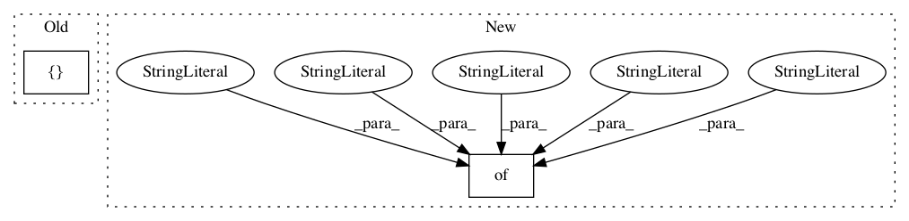

5b485693ea67e3cc1dba9f07d9e7cf6e2b70508e,deepvariant/modeling.py,,,#,1336

Before Change
return endpoints
// Our list of pre-defined models.
_MODELS = [
DeepVariantSmallModel(),
DeepVariantInceptionV3(),
DeepVariantInceptionV2(),
DeepVariantMobileNetV1(),
DeepVariantRandomGuessModel(),
DeepVariantConstantModel(),
]
def all_models():
Gets a list of the all of the known models.
After Change
// This dictionary contains a mapping from the human readable name of a metric
// function (e.g., Accuracy) and its associated TensorFlow metric function. All
// of the entries here will be stratified by variant_type in eval_metric_fn.
_METRICS_FUNCS_BY_VARIANT_TYPE = {
"Accuracy": tf.metrics.accuracy,
"Precision": tf.metrics.precision,
"Recall": tf.metrics.recall,
"FPs": tf.metrics.false_positives,
"FNs": tf.metrics.false_negatives,
"TPs": tf.metrics.true_positives,
"TNs": tf.metrics.true_negatives,
}
// A set containing the names of the variant types we split our metrics by type
// by. This data structure isn"t a dictionary like it"s neighbors because
// eval_metric_fn requires special logic to compute the values here associated
In pattern: SUPERPATTERN
Frequency: 3
Non-data size: 2
Instances
Project Name: google/deepvariant
Commit Name: 5b485693ea67e3cc1dba9f07d9e7cf6e2b70508e
Time:
Author: null
File Name: deepvariant/modeling.py
Class Name:
Method Name:
Project Name: asyml/texar
Commit Name: b8e0a40cf9fc8b74771c270d274d7d2ee7d959d3
Time:
Author: null
File Name: texar/tf/modules/pretrained/gpt2_test.py
Class Name: GPT2UtilsTest
Method Name: test_load_pretrained_gpt2_AND_transform_gpt2_to_texar_config
Project Name: asyml/texar
Commit Name: b8e0a40cf9fc8b74771c270d274d7d2ee7d959d3
Time:
Author: null
File Name: texar/tf/modules/pretrained/gpt2.py
Class Name:
Method Name: _transform_config